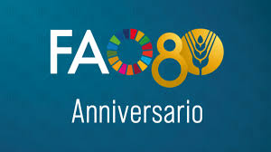

Riflessioni a margine della Giornata mondiale dell‘Alimentazione per 80o della fondazione della FAO di Roma. I
 L
l’Organizzazione delle Nazioni Unite per l’Alimentazione e l’Agricoltura
(FAO) ha inaugurato nella sua sede di Roma “Dal seme al cibo”, la prima
esposizione globale che racconta il lungo percorso del cibo, dal seme
alla tavola – dalle antiche tradizioni alle innovazioni che stanno
trasformando l’agricoltura e l’alimentazione.
L
l’Organizzazione delle Nazioni Unite per l’Alimentazione e l’Agricoltura
(FAO) ha inaugurato nella sua sede di Roma “Dal seme al cibo”, la prima
esposizione globale che racconta il lungo percorso del cibo, dal seme
alla tavola – dalle antiche tradizioni alle innovazioni che stanno
trasformando l’agricoltura e l’alimentazione.
La cerimonia di apertura, guidata dal Direttore Generale QU Dongyu, si è svolta nel Parco di Porta Capena, di fronte alla sede centrale della FAO, e ha segnato l’inizio ufficiale delle celebrazioni per l’80º anniversario dell’Organizzazione.
"Ogni viaggio del cibo inizia da qualcosa di piccolo: un seme, una piantina, un avannotto, un capo di bestiame o un materiale genetico," ha dichiarato il Direttore Generale della FAO QU Dongyu nel suo intervento di apertura. «Da questi umili inizi nasce l’incredibile diversità di alimenti che ci nutrono e ci uniscono tutti," ha aggiunto.
QU ha inoltre sottolineato che il cibo non riguarda solo la scienza o la biologia, ma soprattutto le persone. "Agricoltori, pescatori, pastori, scienziati, giovani e donne sono milioni le mani e le menti che ogni giorno rendono possibile il cibo.

Dai territori. “Il ruolo dei Comuni è fondamentale e strategico per sviluppare, a favore dei territori e della piccola e media impresa, i processi di livello europeo, nazionale e regionale, relativi alla promozione delle politiche agroalimentari del nostro Paese e per la tutela del Made in Italy”.
Lo ha dichiarato Michele Conti, sindaco di Pisa e delegato nazionale Anci all’agricoltura, sovranità alimentare, promozione delle tipicità intervenendo ad “Agrifutura”, il festival dell’Agricoltura organizzato a Firenze da QN, quotidiano nazionale.
“I luoghi di produzione e le pratiche agricole hanno segnato e continuano a tracciare la storia paesaggistica del Paese – ha proseguito Conti – fatta di interconnessione tra l’agricoltura di pregio, l’artigianato di eccellenza, il patrimonio storico-artistico, le tradizioni enogastronomiche, il paesaggio e l’offerta turistica.
A nci può essere protagonista di un grande progetto, che coinvolga le istituzioni a tutti i livelli e le imprese del territorio, per valorizzare il turismo enogastronomico che esprime la ricchezza e la varietà delle eccellenze locali e del made in Italy e consente di raccontare i siti culturali territoriali che compongono lo scheletro produttivo e culturale del Paese, generando benefici economici, sociali e culturali: più ampi e duraturi”.
“Salvaguardia e valorizzazione delle filiere produttive locali, riqualificazione delle terre abbandonate e incolte e supporto all’imprenditoria giovanile, sono i tre pilastri su cui poggiano le azioni di tutela e promozione dei paesaggi rurali su cui, come Comuni Italiani, siamo impegnati a fianco del Ministero dell’agricoltura, della sovranità alimentare e delle foreste” ha concluso Conti.
Simone Stefanini Conti